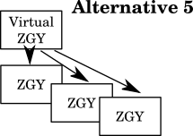

Copyright 2017-2021, Schlumberger
Licensed under the Apache License, Version 2.0 (the "License");
you may not use this file except in compliance with the License.
You may obtain a copy of the License at
http://www.apache.org/licenses/LICENSE-2.0
Unless required by applicable law or agreed to in writing, software
distributed under the License is distributed on an "AS IS" BASIS,
WITHOUT WARRANTIES OR CONDITIONS OF ANY KIND, either express or implied.
See the License for the specific language governing permissions and
limitations under the License.
This document is written for developers that need to understand some of the finer points about ZGY. It contains notes on generating multi resolution (LOD) data. This is not the place to start if you just want an introduction to OpenZGY.
Combining the features of multi resolution and compression creates some very non trivial issues. This document tries to explain them, and describe 4 approaches to solving them.
Plan A (currently used in ZGY-Classic) handles compression by first storing the file uncompressed and then reading back every uncompressed brick (both full resolution and low resolution) and compressing then. The compression stage can be done either by invoking a separate application or as a library call.
Plan B creates each low resolution level LOD n by reading and decimating LOD n-1. This happens automatically when the file is closed. Noise gets accumulated in higher LOD levels to the point where very high levels become useless. The statistics and histogram will also contain one (but only one) level of noise. For uncompressed files this method is slightly better than plan C because there will be less fragmentation in the file, so it will read slightly faster if on the cloud. Also the complete histogram will be available once the lod 2 generation start up. The decimation algorithm might want that information. I am unsure whether the benefits outweigh the cost of maintaining and testing two algorithms.
Plan C (currently used in OpenZGY) is a smarter version of B where LOD 2 and higher is generated from an in-memory cache. All low resolution bricks get two levels of noise.
Plan C1 (no current plans) is like C in that it keeps data in memory until entire 643 bricks can be written out. But the decimation algorithms are run for all levels as early as possible. This means that LOD1 bricks will be as least 643 (can be larger in Z). The LOD2 bricks will be at least 323 and 8 of these have to be collected in memory before being written out. For LOD3, size at least 163 and 64 need to be collected. LOD8 and above will need to revert to a simpler algorithm because there will not be the 163 mini-brick needed to do anything fancier. The benefit of this plan is that generating all LOD levels in parallel allows for fancier algorithms where e.g. LOD2 can be computed directly from LOD0 data. Also it uses less memory. The drawback is that the Python version will run slower due to the need to operate on smaller numpy arrays. Also it is more work to implement.
Plan D (no current plans) is more efficient than C and also creates LOD 1 from the in-memory cache. And statistics from the uncompressed LOD 0. All bricks, both full and full resolution, have only one level of noise. However, Plan D places an additional burden on application code. Possibly tje zgy library must ask for data in the precise order it wants instead of having the application write in am arbitrary order. No plans to implement this one unless we are sure that some applications will use it.
This applies to both uncompressed and compressed data.
With plan A, B, and C it is recommended but not required that the application will write the entire survey with bricks sorted so the last dimension varies fastest and the first slowest. Other orderings will work but the file will then take more time to read if placed on the cloud.
Plan D requires that the ZGY library is in control of the ordering. ZGY will ask for data by invoking a callback instead of application data pushing data to ZGY. In practice this will be Z-order or Hilbert order.
This applies to both uncompressed and compressed data.
The speed with which data can be read from the cloud depends somewhat on choices made when the file was written. Which in turn may depend on which method is used to compute the low resolution data.
Assuming that the application writes in the recommended order, the full resolution bricks can normally be read back as contiguous if the caller requests (64, n*64, all) sections. This allows for faster reads from the cloud. Low resolution bricks are normally slightly less efficient with requests of (64, 64, all), (64, 128, all) and (128, 128, all) read contiguously and everything else needing multiple blocks. Note that (128, 128, all) is actually more efficient here than at LOD 0.
Plan A is optimal at every LOD level. Plan B and C work as described above; optimal at LOD 0 and slightly less so for low resolution. Plan D has the slightly less efficient layout also for full resolution.
All alternatives will write each each low resolution brick exactly once. Plan A will also write each uncompressed full resolution and low resolution brick to a temporary file. Plan A, B, and C need to read back some or all the data that has been written, but only once. The cost of those reads are probably low compared to the write cost.
| Plan | Summary | I/O | Brick noise | Stats noise | Cost | Ordering LOD 0 | Ordering LOD >0 | Memory consumption | Main drawback |
|---|---|---|---|---|---|---|---|---|---|
| A | Separate compression. | Writes twice, reads once. | 1 level (best) | No | Fairly simple. | Optimal. | Optimal. | Max 4.5 brick columns @ LOD 0. | Lots of temporary disk space. |
| B | Read LOD n-1 to make LOD n. | Writes once, Reads once. | LOD >1 gets very bad | 1 level. | Fairly simple. | Optimal. | slightly slower. | Max 4.5 brick columns @ LOD 0. | Noise in LOD > 1 |
| C | More in memory cache. | Writes once, Reads LOD 0 once. | 2 levels in all LODs. | 1 level. | Tricky. | Optimal. | slightly slower. | ~10 brick columns @ LOD 0 | Fragmentation. Deferred histogram. |
| C1 | All LODs made from LOD 0. | Writes once, Reads LOD 0 once. | 2 levels in all LODs. | 1 level. | Tricky. | Optimal. | slightly slower. | ~5 brick columns @ LOD 0 | Slow in Python. Slightly slow in C++. |
| D | ZGY pulls data from app. | Writes once, never reads. | 1 level (best). | No. | Tricky. | Slightly slower. | Slightly slower. | ~10 brick columns @ LOD 0 | More work for apps. |
The memory requirement for plan C and D is higher because the algorithm is recursive and 5 brick columns need to be held at every recursion level. But, the brick column for LOD n will be half the size of the brick column at LOD n-1. Rounded up to a multiple of 64 (or 2 ?)
Possible optimization which I am considering: Read and write larger chunks. The initial implementation has each invocation of _calculate(lod=0) read 4 brick columns. Only two of these will normally be adjacent in the file. So the block size for reading, assuming the default brick size, is 64*64*N samples. With 1024 int8 samples per trace this means reading just 8 MB at a time. Writing at higher lod levels have even smaller block sizes because the size of one brick column gets halved for each successive lod level. On write this isn't actually a problem because data is buffered if it is going to be written to the cloud. But the low resolution data for different lod levels end up interleaved in the file. So this smaller block size becomes the largest block size that can be read from the file later. One solution is to pretend the file has larger bricks, by multiplying the size in the J direction with a power of 2. And if this reaches the survey size and we can still afford to allocate more memory than the brick size in I can also be multiplied by a power of 2. This should work (I think) without much change since the algorithm doesn't need to know the real file brick size. It just needs to trust that the size is chosen such that no writes will write just a part of a brick with more data being added later. Another option is to choose a new block size at each lod level, keeping the buffer size in MB roughly the same at each level. Note that both cases has some drawbacks with constant bricks not always being detected as such. See the next bullet. So while larger buffers are better this is only true up to a point. Try to aim for max 1 GB at each level which ends up writing 256 MB at a time. Another reason to not go overboard with the block size is that this makes the progress bar less useful. And, the current implementation hard codes that exactly 4 bricks of lod-1 are needed for one block of lod n. See _choose_blocksizes().
Possible optimization that probably won't happen: Maintain an is_constant flag for each brick column, not just for the entire buffer. Only needed when the optimization in the previous bullet is in force. When is_constant=True the decimation algorithm of that buffer doesn't need to be run at all. Larger buffers mean that many brick columns with only dead traces end up being decimated anyway because a neighboring brick column did have real traces. Fortunately this only makes a difference for surveys that are very oddly shaped. Such as an L-shape. Or in the case where the survey boundary is set much larger than the bounding box needed to contain it.
Possible optimization which probably won't happen: Implement an alternative non recursive algorithm (plan B) that reads bricks at level N to generate bricks at level N+1. This would be more efficient because I/O block size can be chosen freely and can also be larger since the code won't need to hold on to one set of buffers for each lod layer. The ordering of bricks in the output file would be optimal. The problem with this approach is that it won't work for compressed data. Because noise would accumulate for each level. I would then need to write maintain both algorithms. A single algorithm is bad enough, thank you. Or... maybe store all LOD >= 2 as uncompressed?
Possible optimization which probably won't happen: When making the 4 recursive calls, do a partial paste into the result buffer as soon as the data is returned. This reduced the memory footprint by 3/8 because the code only needs to hold on to one, not four, of the smaller buffers. But it complicates the code. Not least because the size of the result buffer might not be known until all 4 calls have completed.
Possible optimization which probably won't happen: For generating lod 2 and higher the decimation algorithm can be run 4 times, one for each block from the recursive call. Both the readlod and readlod+1 data then needs to be pasted later. The benefit is saving time in the case where some but not all 4 brick columns get flagged as all constant. The drawback is slightly more code. And the decimation algorithm gets called more often with smaller sizes. Which can be inefficient in Python but probably doesn't make any difference for C++.
OpenZGY allows an already written file to be opened for update and have data appended or (uncompressed only) updated. This raises the question of when and how low resolution data is updated.
Applications wanting update support for a file stored on the cloud should consider very carefully whether they want to use the partial update feature. See the cloud-specific caveats discussed below. Often it works better to just delete and re-create the file instead. Unless the file is being used as some kind of working storage that is updated frequently. If the file is updated really frequently it might also be needed to defer updating low resolution data until actually accessed.
When writing to the cloud there are several caveats. Switching to Cloud enabled ZGY access cannot be made completely transparent to application code. Especially not if updating parts of a file. The main problem is that neither GCS buckets nor Azure storage allow updates. We can allow updates in the OpenZGY API but each time the ZGY file is updated the file size on the cloud will grow. Another can of worms, outside the scope of this document, is the need for read and write locks for files on the cloud if ZGY files cannot be treated as immutable.
For similar reasons OpenZGY will also leak disk space if a compressed file is allowed to be opened for update. For compressed data this happens both in cloud storage and on-prem.
This only applies to files where at least the low resolution bricks are stored uncompressed. Otherwise the operation would keep accumulating compression noise.
If a file to be updated has a valid set of low resolution bricks the OpenZGY library will start tracking in memory changes to histogram and statistics and maintaining a list of which bricks have been touched. This means that after updating a file it may be possibly to only re-calculate low resolution data in areas that have changed. Currently the default is still to run a complete rebuild on each close. Applications can request the incremental option in the finalize() call. The change tracking is not foolproof. Numerical inaccuracy might affect the histogram. The histogram range cannot grow and the statistical range cannot shrink.
The incremental algorithm is reasonably efficient. Whenever a brick-column is processed and the flags say it is unchanged, instead of calculating the contents recursively it will just read the decimated data from the layer above. The fact that the granularity is one brick-column instead of just one brick means that some redundant computation might still be done. Also, reading decimated data from the layer above means reading just 1/4 of a brick column. If there are 2 or 3 dirty "sibling brick-columns", i.e. data that map to the same brick at lod+1, then the same data gets read more than once. Fixing those issues is probably not worth the effort.
Add a "lod" argument to IZgyWriter::read().
This is a trivial change now that support has been added to the lower level code. There is even a unit test ready to be enabled if the change is done. But due to several caveats the feature should not be enabled unless somebody needs it.
The main caveat is that the low resolution data will only be up to date after a call to finalize(). This puts an additional burden on the application and a risk of subtle errors if the application forgets.
Another caveat: The first time finalize() is called, the value range of the histogram gets locked down to the range of samples seen at that point. It gets unlocked again on a full finalize. If the application calls the first finalize too early then this means more subtle behavior the application needs to be aware of.
Another caveat is that if the file is on the cloud then every finalize will leak some disk space.
Make this transparent to the application by doing an incremental finalize each and every time the application reads lowres data from a file open for write. This is not as expensive as it sounds because if there has not been any writes between two or more reads then the incremental builds the finalize is a no-op. And of course, being incremental it won't be that expensive. But higher level lods might be rebuilt fairly often and the single brick that is the highest lod will be rebuilt on any change.
nlods() should be changed to return the possible number of lods even when the lowres data is not current. Because it magically becomes current when needed.
Caveat: The note in ambition level 1 about calling finalize() too often is worse here since the application is no longer in control of when finalize is called. As a minimum the finalize on file close probably needs a full rebuild even when it otherwise seems safe to do an incremental one. The code should set a special flag to this effect if the change from "need full" to "incremental allowed" is caused by one of these implicit rebuilds. Calling close() then does a full build. On the cloud, an arbitrary amount of space can be leaked because there is no control of how many finalize() calls there will be.
Only generate the data actually needed to resolve the user's read request. After thinking more closely about this I believe the cost of coding is way higher than the benefits.
The current code assumes that if brick X is clean, the corresponding 1/8th of the parent is up to date. This will no longer be true. So another bit "half-dirty" in the dirty bitmap needs to note that brick X is clean but its parent is not so if this is a recursive call then X must be treated as dirty. I think I need to set this in all bricks of the requested LOD that were dirty. Because the in-memory buffer of decimated data will be discarded (or just not computed). Bricks in recursively computed lower layers won't need this special handling. I hope.
The improved algorithm shown below is still not optimal because if new lowres bricks are required then _calculate() will write them to file and then the read request will read back that same data instead of having _calculate() somehow keep the data in memory. Implementing that appears to be ridiculously complicated. Both because not all the bricks might have needed a rebuild and because the rebuild returns both more (full brick columns) and less (because just one brick column at a time) data then what the application asked for. So copying the result out to the user's buffer might get pretty complicated.
Actual algorithm:
On read of LOD > 0: Check whether the exact area of the read request is dirty.
IF dirty:
IF no pre-existing histogram range: set special full-rebuild-flag = true.
Instanciate a GenLodC.
IF ambition level == 2:
Invoke _calculate() on top level
ELSE:
Make list of brick-columns at lod overlapping the read request.
FOR EACH brick column:
Invoke _calculate() for this column, passing need_result = false.
Somehow set the special half-dirty in the approptiate places.
END IF dirty
This is orthogonal to the rest.
Re-introduce the dynamically widening histogram. This fixes the caveat of incorrect histograms but will be expensive to code.

A different approach both to partial updates and incremental builds is to introduce a new "Virtual ZGY" file format to be used for very large files. This would basically be a list of regular ZGY files to read the real data from. Plus histogram and statistics for the whole file.
Incidentally this feature might also facilitate allowing multiple processes to write to the (logically) same ZGY file in parallel.
The OpenZGY API would hide these details in IZgyReader so application code wouldn't even know that multiple files were involved. Writing such files would require application changes.
individual real ZGY files would be assumed to be small enough to be deleted and re-created if any part of them is touched. And to do a full rebuild of low resolution data in this file only.
Minor note: If it is desirable to still provide all LOD levels up to the one where only one brick is required then the single topmost LOD in each partial file should be stored uncompressed and should be duplicated in a single "low-resolution" partial file holding all LOD levels that depend on data from multiple files.